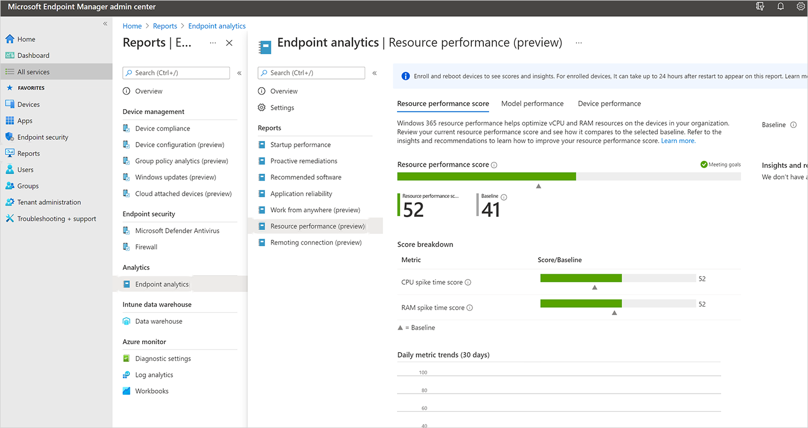
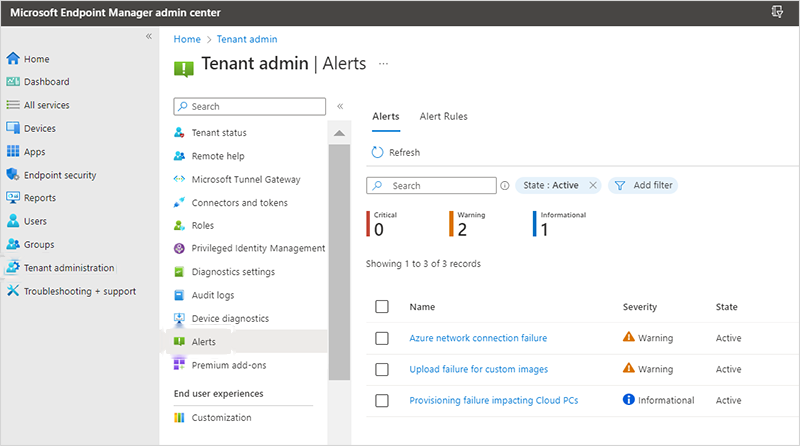
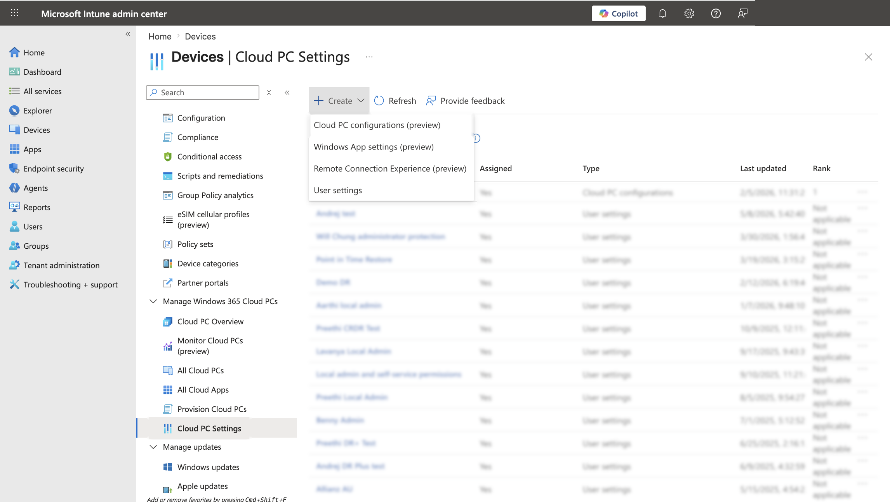
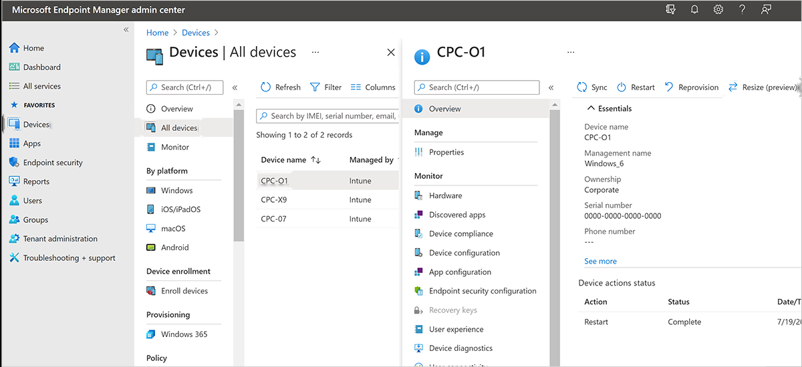

Windows 365 / Cloud PC — Provisioning, Health & Shared Cloud PCs
Design lead / Design owner · Pre-launch → Private Preview & GA · ~3.5 years (2021–2024)
Windows 365 launched as a brand-new virtualization product with no established admin model — fragmented provisioning, confusing navigation, and no way to see whether Cloud PCs were healthy. What shipped: a coherent admin experience with guided provisioning, a Cloud PC health dashboard, shared/Frontline Cloud PCs, and navigation that matched how admins actually think.
Problem
Windows 365 introduced Cloud PCs into Intune with no precedent for how admins would provision, assign, monitor, and troubleshoot them. Research showed admins confused Windows 365 / Microsoft 365 / Office 365, and treated provisioning as separate from ongoing management.
My Role
Design lead for the Intune-based Cloud PC admin experiences and Design Owner for Windows 365 Frontline (later Flex) shared Cloud PCs — from early pre-launch through Private Preview and GA. Partnered with PMs Sam Tulimat, Christiaan Brinkhoff, and Colby Hanley; content by Kay Jorgensen; research by Abena Edugyan.
Before this, admins couldn’t tell if a Cloud PC was healthy at all.





Shipped Windows 365 management experiences, published by Microsoft — learn.microsoft.com/windows-365. Reference for the shipped admin surfaces; my contribution is the design of these management/health experiences, not the raw pixels. Use only Microsoft-published screens or abstractions you recreate — never internal or unreleased UI.
Honest scope note: strongest as admin & management UX in Intune, not broad end-user client design; hard quantitative outcomes weren’t tracked, so it’s framed by role, decisions, and shipped surfaces.